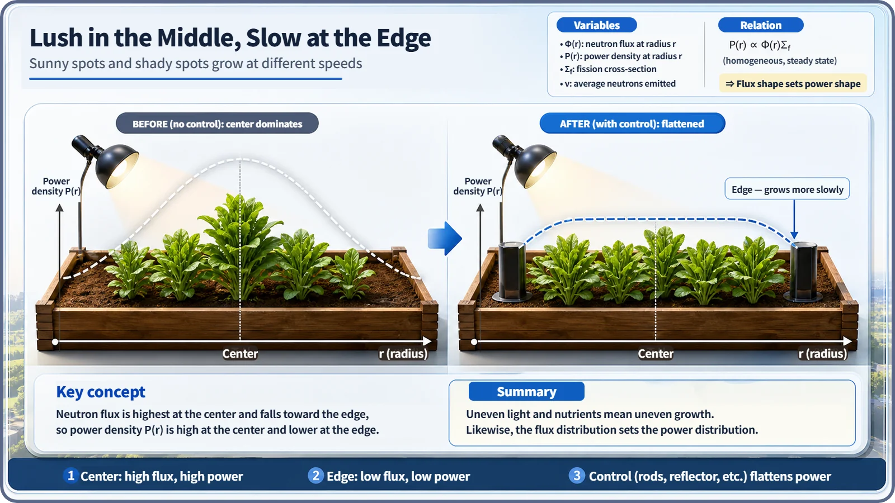
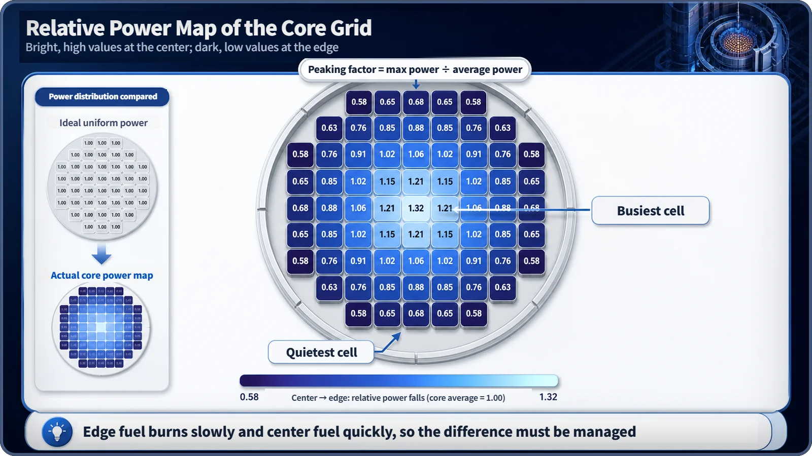

Neutron Physics & the Core · 099
Why the Plants at the Edge of the Garden Grow Slower — Core Power Distribution and the Peaking Factor
Like plants in the shady edge of a garden, edge fuel burns more slowly, and engineers capture the center-to-edge difference in one number: the peaking factor.
Because power is lower at the edge of a reactor core, fuel there burns more slowly while fuel near the center burns faster. Engineers capture the size of this imbalance in one number, the peaking factor (local maximum power divided by average power), and use it to set hot-spot safety margins, watch the core in real time and plan where fuel goes at each reload.
So what does a lower edge power actually mean?
The neutron flux in a reactor core, and the power that comes with it, is highest at the center and falls toward the edge: the middle of a room is warmed from every side, while warmth leaks away near the windows. But why is that simple fact such an important thing for the people who design and run reactors to manage? Let's pick up the story with a garden.
Every garden has fast spots and slow spots
Sow the same seeds on the same day and the plants in the middle of a bed grow thick and lush, while the ones along the edge, near the wall, always lag a little. The middle gets even sunlight all day; the edge spends more time in shadow. An experienced gardener gives the edge plants a little extra water, or next season plants a shade-tolerant variety there. You have to know that growth speed differs from spot to spot before you can manage each spot properly.
Fuel in a core is in exactly the same situation. Fuel assemblies at the center sit in a high neutron flux, so fission happens briskly there and the fissile material inside is used up faster. Fuel assemblies at the edge sit in a lower flux, so fission is sparser and the fuel is used up more slowly. Plants "grow" at different speeds; fuel "burns" at different speeds.

Putting the difference into one number: the peaking factor
A gardener judges "the edge is slow" by eye; reactor designers and operators manage the same difference precisely, with a number, the peaking factor:
Peaking factor (F) ≈ local maximum power in the core ÷ average core power
Set the average power of the whole core to 1, and the peaking factor tells you how many times higher than average the hottest spot (usually near the center) is. The closer it is to 1, the more evenly, or flatly, the core is burning; the larger it is, the more sharply power is concentrated somewhere. In practice more detailed indicators are used, such as separate peaking factors for the radial and axial (height) directions, but the core idea is the ratio of the maximum to the average.

Why this number is the starting point for safety and design
A large peaking factor means that somewhere in the core, a hot spot, power and heat are much higher than the core average. So designers base their margins not on average conditions but on that hot spot, building in ample room on the temperature the fuel can tolerate and on the cooling capacity that keeps it in check. During operation, neutron-flux (power) instruments inside and outside the core keep measuring the actual power distribution, so operators can confirm in real time that the peaking factor stays within the technical limits.
Flip it around: "power is lower at the edge" also means "somewhere near the center, power is well above average." Knowing this asymmetry exactly, and managing it with a number, is the first step toward securing the safety margin of the whole core.
The difference is put to use when fuel is replaced, too
A reactor periodically stops, on a cycle of a dozen or more months, and replaces part of its fuel. The reload plan, which decides what fuel goes where, reflects these power differences. Because the edge is naturally a low-power position, leaving or placing fuel that is already relatively used up there doesn't push the peaking factor up much, and loading strategies that use this property are part of real core management. Edge fuel isn't a loser because its power is low; that very property is a resource in planning how the core is run.
Two common misconceptions
| Misconception | What is actually true |
|---|---|
| "Edge fuel is simply wasted." | Edge fuel holds on to its fissile material longer, and reload planning puts that to use. It is something to manage, not a loss. |
| "Peaking factor just means the power is uneven." | The unevenness is the flux-distribution story; the peaking factor is the single number that measures how big the imbalance is. |
| "High central power is a danger signal." | It means margins must be secured and managed for that spot; a normally designed and operated plant is not in a dangerous state because of it. |
Key takeaways
Lower power at the core edge means center fuel burns faster and edge fuel more slowly. The peaking factor, F ≈ local maximum power ÷ average power, turns that imbalance into one number that sets hot-spot safety margins, is monitored in real time, and shapes the reload plan. How the peaked distribution can be smoothed out is a story of its own.